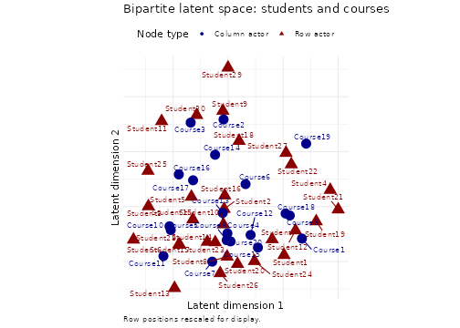
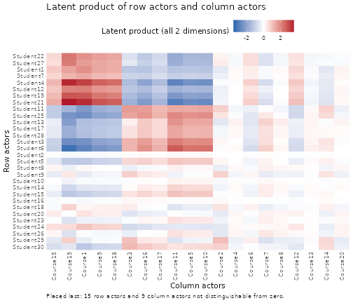
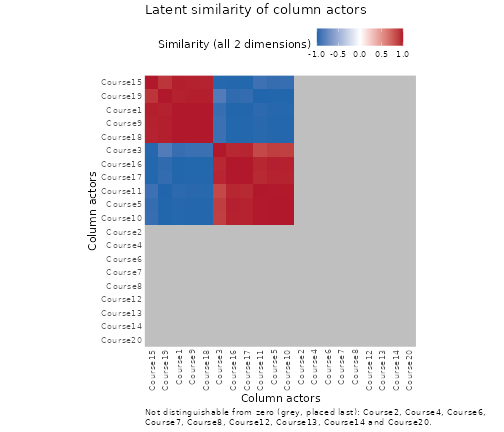
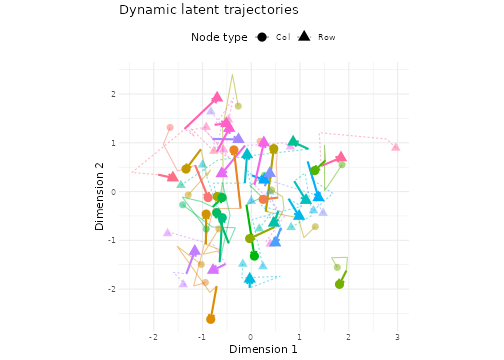
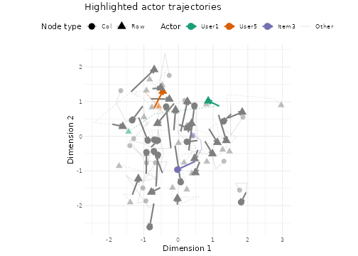
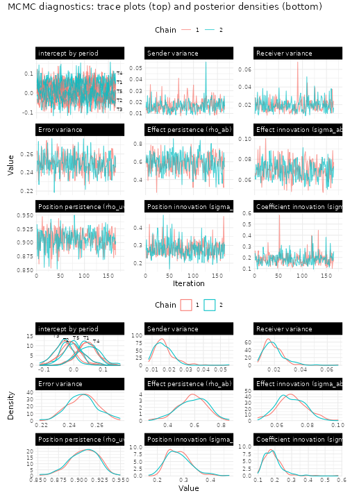
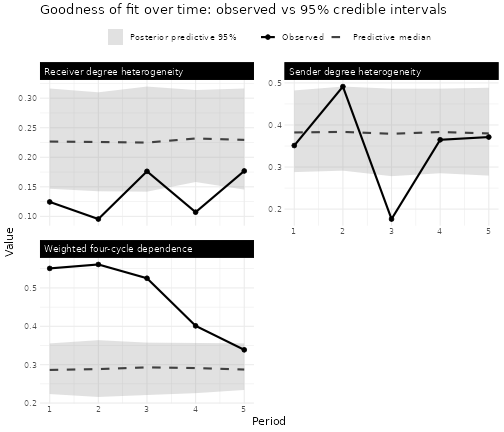
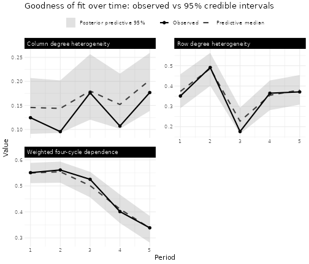
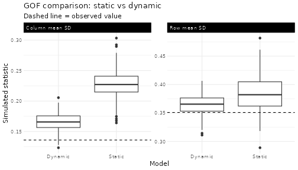

Bipartite Network Analysis
Cassy Dorff, Shahryar Minhas, and Tosin Salau
2026-11-22
Source:vignettes/articles/bipartite.Rmd
bipartite.RmdIntroduction
Many real-world networks are bipartite: two distinct types of nodes, with ties forming only between types, never within them. Students enroll in courses, countries sign treaties, legislators join committees. The adjacency matrix is rectangular rather than square, and the row and column nodes play fundamentally different roles.
Both ame() (cross-sectional) and lame()
(longitudinal) support bipartite networks. The key difference from the
unipartite case is that the model uses separate latent spaces for the
two node types, connected by an interaction matrix
.
The Bipartite AME Model
In a bipartite network, the probability of a tie between row node and column node is modeled as:
The additive effects work as in the unipartite case (see the cross-sectional vignette): captures how “active” row node is, how “popular” column node is. The multiplicative term replaces the unipartite : row and column nodes live in potentially different-dimensional latent spaces ( and ), and is a interaction matrix.
How enters differs between the cross-sectional and longitudinal entry points:
- In
ame()(cross-sectional bipartite), is a rank-truncated scaled identity, held fixed during MCMC. The rotation and scaling of the interaction are carried by and , and the identified quantity is the overall multiplicative term . - In
lame()(longitudinal bipartite), the sampler draws each iteration from its conditional Gaussian, and one is shared across periods (see Time-varying interaction matrix below).
In either case, the row-side positions (, shape ) and column-side positions (, shape ) can be chosen at different ranks.
Two terms are absent in the bipartite setting: the dyadic correlation (a row actor is never also a column actor, so there is no reciprocal tie to correlate), and the joint covariance of and , which instead have independent variances since they describe different types of actors.
Supported families in bipartite mode
Every family that fits a square network also fits a rectangular one,
in both ame() and lame(). Each cell is
independent given the linear predictor, because a bipartite graph has no
reciprocal cell.
| Family | Tie type |
|---|---|
normal |
continuous values. |
binary |
tie / no tie, probit link. |
ordinal |
ordered categories, with cutpoints induced by the data. |
cbin |
censored binary, with odmax as the per-row cap on
ties. |
frn |
fixed rank nominations; each row’s top odmax ranks are
observed. |
poisson |
counts; period_exposure supplies a per-period offset in
lame(). |
Cross-Sectional Analysis with ame()
Coming from long-format data?
If your data lives in a long-format table (patient_id,
drug, prescribed), build a bipartite
netify object and pass it directly to
ame():
rx_net <- netify::netify(
rx,
actor1 = "patient_id",
actor2 = "drug",
weight = "prescribed",
mode = "bipartite",
symmetric = FALSE,
missing_to_zero = FALSE
)
fit <- ame(rx_net, family = "binary", mode = "bipartite", R = 2)Row and column names carry through to fit$APM (one
number per patient) and fit$BPM (one number per drug)
downstream. Use missing_to_zero = TRUE only when absent
patient-drug rows are observed non-prescriptions rather than unobserved
dyads.
Simulating Data
We simulate a bipartite network of 30 students and 20 courses, each with a 2-dimensional latent position; the interaction matrix determines how those dimensions combine to predict enrollment.
# simulate a student-course enrollment network
n_students <- 30
n_courses <- 20
# true latent positions (unobserved in practice)
U_true <- matrix(rnorm(n_students * 2, 0, 0.8), n_students, 2)
V_true <- matrix(rnorm(n_courses * 2, 0, 0.8), n_courses, 2)
# interaction matrix: positive affinity on dimension 1, negative on dimension 2
G_true <- matrix(c(1, 0.5, 0.5, -1), 2, 2)
# enrollment ties; the negative intercept keeps enrollment near 25-30%
eta <- -0.8 + U_true %*% G_true %*% t(V_true)
prob <- pnorm(eta)
Y_bipartite <- matrix(
rbinom(n_students * n_courses, 1, prob),
n_students,
n_courses
)
rownames(Y_bipartite) <- paste0("Student", 1:n_students)
colnames(Y_bipartite) <- paste0("Course", 1:n_courses)
cat("Network dimensions:", dim(Y_bipartite), "\n")
#> Network dimensions: 30 20
cat("Enrollment rate:", round(mean(Y_bipartite), 2), "\n")
#> Enrollment rate: 0.29Fitting the Model
Fitting a bipartite model requires setting
mode = "bipartite" and specifying the latent dimensions for
each node type separately via R_row and
R_col.
# two chains by default; summary() ends with the between-chain check
fit_cross <- ame(
Y = Y_bipartite,
mode = "bipartite",
R_row = 2, # latent dimensions for students
R_col = 2, # latent dimensions for courses
family = "binary",
burn = 500,
nscan = 2000,
odens = 5,
verbose = FALSE,
# save thinned U/V draws so latent_positions() reports posterior SDs
posterior_opts = posterior_options(save_UV = TRUE)
)
summary(fit_cross)
#>
#> ── AME model summary ───────────────────────────────────────────────────────────
#>
#> ── Call
#> Y ~ a[i] + b[j] + U[i,1:2] %*% G %*% V[j,1:2]', family = 'binary'
#>
#> ── Regression coefficients
#> Estimate StdError z_value p_value CI_lower CI_upper Rhat Threshold
#> intercept -0.793 0.113 -7.022 0 -1.011 -0.578 1.006 1.05
#> ESS
#> intercept 462.819 ***
#> ---
#> Signif. codes: 0 '***' 0.001 '**' 0.01 '*' 0.05 '.' 0.1 ' ' 1
#> ℹ Stars are a visual hint from the posterior mean / SD only; for inference use
#> the credible intervals.
#>
#> ── Variance components
#> Estimate StdError Rhat Threshold ESS
#> va 0.050 0.022 1.001 1.05 864.628
#> vb 0.059 0.029 1.000 1.05 1022.309
#> va = row variance, vb = column variance
#> • Latent dimensions: 96%, 4% of the latent product
#> ℹ Threshold is the R-hat the between-chain gate held each monitored quantity
#> to: 1.05, or the R-hat that settled chains with the same effective draws
#> reach by chance, if larger.
#> ✔ The chains agree on every monitored quantity (R-hat at most its threshold, with enough effective draws to compare).The summary shows the intercept (we included no covariates) and the
variance components. The fitted object also stores student latent
positions (U), course latent positions (V),
the (fixed) interaction matrix (G), and additive effects
(APM for student activity, BPM for course
popularity).
Visualizing the Latent Space
uv_plot with layout = "biplot" places both
node types in the same latent space: students and courses that appear
close together have a higher predicted probability of a tie.

In ame() the estimated quantity is the overall
multiplicative term
,
and fit_cross$U and fit_cross$V are its
factors: they factor the posterior mean of that product, so they are
posterior summaries, not a single draw. layout = "heatmap"
draws the product itself, students against courses, with each side
ordered by clustering:
uv_plot(fit_cross, layout = "heatmap")
With nodes = "col" the heatmap shows how similar the
courses are: the cosine between their columns of the product, using
every fitted dimension. Courses with similarity near 1 draw the same
students, near -1 opposite ones. Courses in grey have positions not
distinguishable from zero, so they have no direction to compare; they
are placed last and named in the caption.
latent_similarity(fit_cross, "col") returns the same
matrix. Because the latent product is centred, similarity is measured
against the average course: courses with no pattern of their own sit
opposite that average and look similar to each other.
uv_plot(fit_cross, layout = "heatmap", nodes = "col")
Longitudinal Analysis with lame()
When bipartite networks are observed over multiple time periods
(enrollments across semesters, country–treaty memberships across
decades), lame() pools information across time while
optionally allowing the latent structure to evolve.
Simulating Longitudinal Data
We simulate a panel of user–item networks over 5 periods whose latent
positions drift via an AR(1) process with
.
We use the normal family for a continuous outcome; the same
calls fit the other families. The data-generating
is constant across periods, which is what lame() estimates.
The chunk writes the AR(1) in its stationary-variance
form
(
with
,
marginal variance held at 1), and the sampler reports the
innovation-variance form
(
with
);
the two coincide when
.
n_periods <- 5
n_users <- 20
n_items <- 15
true_rho <- 0.9
G_long <- matrix(c(1, 0.3, 0.3, -0.8), 2, 2)
U_t <- vector("list", n_periods)
V_t <- vector("list", n_periods)
U_t[[1]] <- matrix(rnorm(n_users * 2), n_users, 2)
V_t[[1]] <- matrix(rnorm(n_items * 2), n_items, 2)
for (t in 2:n_periods) {
U_t[[t]] <- true_rho * U_t[[t - 1]] +
sqrt(1 - true_rho^2) * matrix(rnorm(n_users * 2), n_users, 2)
V_t[[t]] <- true_rho * V_t[[t - 1]] +
sqrt(1 - true_rho^2) * matrix(rnorm(n_items * 2), n_items, 2)
}
Y_list <- list()
for (t in 1:n_periods) {
eta_t <- U_t[[t]] %*% G_long %*% t(V_t[[t]])
# continuous outcome: the latent term plus Gaussian noise
Y_list[[t]] <- eta_t +
matrix(rnorm(n_users * n_items, 0, 0.5), n_users, n_items)
rownames(Y_list[[t]]) <- paste0("User", 1:n_users)
colnames(Y_list[[t]]) <- paste0("Item", 1:n_items)
}
names(Y_list) <- paste0("T", 1:n_periods)
cat("Time periods:", length(Y_list), "\n")
#> Time periods: 5
cat("Dimensions per period:", dim(Y_list[[1]]), "\n")
#> Dimensions per period: 20 15
cat("Average edge weight:", round(mean(sapply(Y_list, mean)), 2), "\n")
#> Average edge weight: -0.01
cat("True latent AR(1) coefficient:", true_rho, "\n")
#> True latent AR(1) coefficient: 0.9Static Model
The simplest longitudinal model holds latent positions and additive effects constant over time, pooling all periods into a single, more precise estimate per actor.
fit_static <- lame(
Y = Y_list,
mode = "bipartite",
R_row = 2,
R_col = 2,
family = "normal",
dynamic_uv = FALSE,
dynamic_ab = FALSE,
burn = 500,
nscan = 2000,
odens = 20,
verbose = FALSE,
plot = FALSE
)
summary(fit_static)
#>
#> ── Longitudinal AME model summary ──────────────────────────────────────────────
#>
#> ── Call
#> Y ~ a[i] + b[j] + U[i,1:2] %*% G %*% V[j,1:2]', family = 'normal'
#>
#> ── Model
#> • Time periods: 5
#> • Family: normal
#> • Mode: bipartite
#> • Latent dimensions: 91%, 9% of the latent product
#> ℹ Static fit: U, V, a and b are shared across the 5 periods, and per-period
#> predictions vary through the per-period covariates. `dynamic_uv = TRUE` and
#> `dynamic_ab = TRUE` let them vary over time.
#>
#> ── Regression coefficients
#> Estimate StdError z_value p_value CI_lower CI_upper Rhat Threshold
#> intercept -0.011 0.024 -0.457 0.648 -0.056 0.038 1.008 1.05
#> ESS
#> intercept 400
#> ---
#> Signif. codes: 0 '***' 0.001 '**' 0.01 '*' 0.05 '.' 0.1 ' ' 1
#> ℹ Stars are a visual hint from the posterior mean / SD only; for inference use
#> the credible intervals.
#>
#> ── Variance components
#> Estimate StdError Rhat Threshold ESS
#> va 0.020 0.007 1.001 1.05 400
#> vb 0.021 0.008 1.001 1.05 400
#> ve 0.905 0.034 0.997 1.05 400
#> va = row variance, vb = column variance, ve = residual variance
#> ℹ Threshold is the R-hat the between-chain gate held each monitored quantity
#> to: 1.05, or the R-hat that settled chains with the same effective draws
#> reach by chance, if larger.
#> ✔ The chains agree on every monitored quantity (R-hat at most its threshold, with enough effective draws to compare).Dynamic Model
When the latent structure changes over time (tastes shift, items gain or lose popularity), the dynamic model lets latent positions and additive effects drift via AR(1) processes: close to 1 means slow, gradual change; close to 0, near-independent structure from period to period.
# same run length as the static fit
fit_dynamic <- lame(
Y = Y_list,
mode = "bipartite",
R_row = 2,
R_col = 2,
family = "normal",
dynamic_uv = TRUE,
dynamic_ab = TRUE,
burn = 500,
nscan = 2000,
odens = 20,
verbose = FALSE,
plot = FALSE
)
summary(fit_dynamic)
#>
#> ── Longitudinal AME model summary ──────────────────────────────────────────────
#>
#> ── Call
#> Y ~ a[i] + b[j] + U[i,1:2] %*% G %*% V[j,1:2]', family = 'normal'
#>
#> ── Model
#> • Time periods: 5
#> • Family: normal
#> • Mode: bipartite
#> • Dynamic latent positions: enabled (kind = ar1, rho_uv = 0.906)
#> • Dynamic additive effects: enabled (rho_ab = 0.583)
#> rho_ab: posterior sd 0.105 is 0.83 of the prior sd 0.126: the data barely
#> inform it.
#> • Dynamic regression coefficients: enabled (kind = rw1)
#>
#> ── Regression coefficients
#> Estimate StdError z_value p_value CI_lower CI_upper Rhat Threshold
#> intercept 0.009 0.018 <NA> <NA> -0.026 0.05 1.014 1.05
#> ESS
#> intercept <NA>
#> ---
#> Signif. codes: 0 '***' 0.001 '**' 0.01 '*' 0.05 '.' 0.1 ' ' 1
#> ℹ Stars are a visual hint from the posterior mean / SD only; for inference use
#> the credible intervals.
#> ℹ intercept is a coefficient path: the row gives the mean level over the
#> periods and its interval, with no z or p-value. The periods are below.
#>
#> ── Dynamic coefficients per period
#> Mean Min Max Drift Drift_pct Dynamic
#> intercept 0.009 -0.034 0.049 0.082 931.231 Y
#>
#> ── intercept by period
#> Estimate StdError CI_lower CI_upper
#> T1 0.044 0.032 -0.025 0.102
#> T2 -0.013 0.032 -0.081 0.041
#> T3 -0.034 0.032 -0.099 0.032
#> T4 0.049 0.037 -0.025 0.122
#> T5 -0.001 0.037 -0.072 0.079
#>
#> ── Variance components
#> Estimate StdError Rhat Threshold ESS
#> va 0.017 0.006 1.010 1.05 281.075
#> vb 0.019 0.007 0.998 1.05 330.000
#> ve 0.249 0.010 0.999 1.05 330.000
#> va = row variance, vb = column variance, ve = residual variance
#> Under `dynamic_ab`, va and vb are the variances of the actor levels; rho_ab
#> and sigma_ab describe the per-period deviations around them.
#> ℹ Threshold is the R-hat the between-chain gate held each monitored quantity
#> to: 1.05, or the R-hat that settled chains with the same effective draws
#> reach by chance, if larger.
#> ✔ The chains agree on every monitored quantity (R-hat at most its threshold, with enough effective draws to compare).The dynamic model reports estimated AR(1) persistence parameters for
the latent positions (rho_uv) and additive effects
(rho_ab).
cat(sprintf(
"True rho_uv = %.2f | posterior mean = %.3f | 95%% CI = [%.3f, %.3f]\n",
true_rho,
mean(fit_dynamic$rho_uv),
quantile(fit_dynamic$rho_uv, 0.025),
quantile(fit_dynamic$rho_uv, 0.975)
))
#> True rho_uv = 0.90 | posterior mean = 0.906 | 95% CI = [0.870, 0.934]rho_uv is the persistence of the latent positions. The
data inform it through the products
,
so read it alongside the innovation scale, and use the per-period
products in fit_dynamic$UVPM to study how the fitted
structure changes: they do not depend on the orientation of the
coordinates.
rho_ab is the persistence of the per-period deviations
of the sender and receiver effects around each actor’s level. The levels
are pooled over time, and va and vb in the
summary are their variances. The simulated outcome is
plus noise, with no sender or receiver activity, and the fit reports
that: va and vb are 0.017 and 0.019, against a
residual variance of 0.249. The summary line under rho_ab
compares its posterior sd with its prior sd, which shows how much the
data say about it. On data with period-to-period swings in activity,
read rho_ab as you read rho_uv, alongside its
own variance component.
Time-varying interaction matrix
lame() estimates one interaction matrix
for the whole panel, and the positions carry change over time. With
time-varying positions,
:
movement in
and movement in the positions give the same likelihood, so the model
places its temporal prior on the positions and estimates one
.
To study how the interaction between the two latent spaces changes
over time, fit dynamic_uv = TRUE and read the per-period
product fit$UVPM, an
array, which is the quantity the likelihood identifies.
Visualizing Temporal Evolution
With dynamic effects, uv_plot can show trajectories:
each line traces one actor’s latent position from the first to the last
period. With 35 actors a per-actor legend and labels would swamp the
panel, so we suppress both and read the plot for the overall pattern:
positions drift gradually and stay clustered rather than scattering.
uv_plot(fit_dynamic, plot_type = "trajectory", label.nodes = FALSE) +
guides(color = "none") +
ggtitle("Dynamic latent trajectories")
To inspect specific actors, pass their names to
highlight =: the named actors are coloured (and identified
in the legend) while every other trajectory is greyed out.
uv_plot(
fit_dynamic,
plot_type = "trajectory",
highlight = c("User1", "User5", "Item3"),
label.nodes = FALSE
) +
ggtitle("Highlighted actor trajectories")
Convergence Diagnostics
trace_plot() shows the draws of the dynamic fit,
coloured by chain. The dyadic correlation and sender-receiver covariance
are structural constants in bipartite mode (fixed at zero; for a binary
bipartite fit the probit error variance is likewise fixed at 1), so we
exclude them and the panels show only sampled parameters.
trace_plot(
fit_dynamic,
exclude = c("Dyadic correlation", "Sender-receiver covariance")
)
Look for traces that mix well (no long flat stretches or slow drifts)
and densities that are smooth and unimodal. The numerical check is the
between-chain
verdict that closes each summary() above, and all three
fits in this article pass it; fit_dynamic$rhat holds the
per-parameter values. For further diagnostics –
posterior::summarise_draws() for
split-
and ESS, ame(..., chains = 4) for a comparison across more
chains, prior_summary(), and loo::loo() after
refitting with save_log_lik = TRUE – see the worked
end-to-end stack in the cross-sectional
vignette.
Comparing Static and Dynamic Models
Is the dynamic model worth the added complexity? The goodness-of-fit plots provide one comparison: if the dynamic model’s posterior-predictive distributions better cover the observed statistics, the extra flexibility is paying off. In each panel the observed statistic at each period is a solid black line with filled points, the posterior-predictive median a dashed grey line, and the grey band the 95% posterior-predictive credible interval. The Gaussian bipartite checks are sender heterogeneity, receiver heterogeneity and weighted four-cycle dependence (the average product of centered, standardized values around fully observed rectangles). Compare all three for each fitted period.
# GOF panels for the static and dynamic fits
gof_plot(fit_static)
gof_plot(fit_dynamic)
The following boxplots summarize the two degree statistics across periods: the SD of row means (how much users vary in activity) and the SD of column means (how much items vary in popularity).
gof_static <- fit_static$GOF
gof_dynamic <- fit_dynamic$GOF
# time-averaged posterior predictive draws (column 1 is the observed value)
extract_ppc <- function(gof, stat) {
mat <- gof[[stat]]
colMeans(mat[, -1, drop = FALSE])
}
# observed values averaged over periods
obs_vals <- c(
mean(gof_static$sd.rowmean[, 1]),
mean(gof_static$sd.colmean[, 1])
)
# each model contributes its own number of saved draws
ppc_df <- function(gof, model) {
n <- ncol(gof$sd.rowmean) - 1
data.frame(
value = c(extract_ppc(gof, "sd.rowmean"), extract_ppc(gof, "sd.colmean")),
model = model,
statistic = rep(c("Row mean SD", "Column mean SD"), each = n)
)
}
gof_df <- rbind(ppc_df(gof_static, "Static"), ppc_df(gof_dynamic, "Dynamic"))
obs_df <- data.frame(
statistic = c("Row mean SD", "Column mean SD"),
observed = obs_vals
)
# posterior-predictive medians quoted in the text below
ppc_med <- with(gof_df, tapply(value, list(model, statistic), median))
ve_static <- round(mean(fit_static$VC[, "ve"]), 3)
ve_dynamic <- round(mean(fit_dynamic$VC[, "ve"]), 3)
ggplot(gof_df, aes(x = model, y = value)) +
geom_boxplot() +
geom_hline(
data = obs_df,
aes(yintercept = observed),
linetype = 2
) +
facet_wrap(~statistic, scales = "free_y") +
labs(
title = "GOF comparison: static vs dynamic",
subtitle = "Dashed line = observed value",
x = "Model", y = "Simulated statistic"
) +
theme_bw() +
theme(
panel.border = element_blank(),
axis.line = element_blank(),
axis.ticks = element_blank(),
legend.position = "top",
plot.title = element_text(hjust = 0),
plot.subtitle = element_text(hjust = 0),
plot.caption = element_text(hjust = 0),
strip.background = element_rect(fill = "black", color = "black"),
strip.text = element_text(color = "white", hjust = 0)
)
The dynamic model fits these data better, and the clearest evidence
is per period. The residual variance ve falls from 0.905 in
the static fit to 0.249 in the dynamic fit, against the 0.25 noise
variance we simulated (noise sd 0.5). In
gof_plot(fit_dynamic) the posterior-predictive median
follows the observed sender heterogeneity as it moves from period to
period (0.35, 0.49, 0.18, 0.36, 0.37), while in
gof_plot(fit_static) the median is essentially flat. The
boxplot averages each statistic across the five periods within each draw
(colMeans), so it shows the time-averaged part of that
difference: the posterior-predictive medians, dynamic versus static, are
0.37 versus 0.38 against an observed 0.35 for the row-mean SD, and 0.17
versus 0.23 against 0.14 for the column-mean SD. To judge whether a
dynamic fit earns its complexity, read the time-averaged boxplot
together with ve, the per-period gof_plot(),
and loo::loo_compare().
Choosing Latent Dimensions
The latent dimensions (R_row, R_col)
control how rich the multiplicative structure is; a practical way to
choose them is to fit at several ranks and compare GOF statistics.
# R = 0 is the no-latent-space baseline
dims_to_test <- list(
c(0, 0),
c(1, 1),
c(2, 2)
)
# observed GOF statistics
obs_gof <- gof_stats(Y_bipartite, mode = "bipartite")
gof_results <- list()
for (i in seq_along(dims_to_test)) {
fit_temp <- ame(
Y = Y_bipartite,
mode = "bipartite",
R_row = dims_to_test[[i]][1],
R_col = dims_to_test[[i]][2],
family = "binary",
burn = 200,
nscan = 2500,
odens = 5,
verbose = FALSE
)
# one-sided posterior predictive tail probabilities
gof_results[[i]] <- c(
R_row = dims_to_test[[i]][1],
R_col = dims_to_test[[i]][2],
pval_rowmean = mean(fit_temp$GOF[, "sd.rowmean"] >= obs_gof["sd.rowmean"]),
pval_colmean = mean(fit_temp$GOF[, "sd.colmean"] >= obs_gof["sd.colmean"]),
pval_fourcycles = mean(fit_temp$GOF[, "four.cycles"] >= obs_gof["four.cycles"])
)
}
do.call(rbind, gof_results)These are one-sided posterior predictive tail probabilities, not
formal test p-values: values near 0.5 mean the observed statistic lies
in the bulk of the predictive distribution, while values near 0 or 1
flag systematic over- or under-prediction. For ame(),
fit$GOF stores the observed statistic in row 1, so the
calculation includes that one point. The relationship to R
is not monotonic, so choose the smallest rank at which the important
statistics fall away from the endpoints. If degree statistics remain at
an endpoint across ranks while four-cycle statistics are well
reproduced, adding dimensions is not addressing the source of the
mismatch.
Practical Guidance
When to use bipartite models. Use bipartite mode whenever ties only form between two fundamentally different types of nodes. A rectangular adjacency matrix almost certainly needs it, and even a square one (say, 20 students and 20 courses) does when rows and columns represent different kinds of entities.
Interpreting the output. The additive effects
(APM, BPM) are the most directly
interpretable: which row nodes are unusually active and which column
nodes unusually popular, after controlling for covariates and latent
structure. The latent positions (U, V) and
interaction matrix (G) capture residual association,
answering “beyond the covariates and overall activity levels, which row
nodes tend to connect to which column nodes?”
Extracting Positions for Custom Analysis
If you need the latent positions in a tidy format,
latent_positions() returns a data frame with one row per
actor-dimension-time combination. The posterior_sd column
is populated here because fit_cross stored thinned U/V
draws via
posterior_opts = posterior_options(save_UV = TRUE); without
that option the column is NA and a refit hint is
printed.
lp <- latent_positions(fit_cross)
head(lp)
#> actor dimension time value posterior_sd type
#> 1 Student1 1 1 0.92664928 0.4070340 U
#> 2 Student2 1 1 -0.06600046 0.3098522 U
#> 3 Student3 1 1 -1.32145387 0.4524009 U
#> 4 Student4 1 1 1.69250957 0.5217933 U
#> 5 Student5 1 1 -0.60815235 0.3155654 U
#> 6 Student6 1 1 -1.56906407 0.4978761 U
# row nodes (students) only
lp_students <- lp[lp$type == "U", ]
cat("Student positions:", nrow(lp_students), "rows\n")
#> Student positions: 60 rowsThis is especially useful for bipartite networks where U (row nodes) and V (column nodes) have different numbers of actors.